I architect and deploy production AI systems on cloud infrastructure. Not demos. Not notebooks.
Real systems with auth, persistence, orchestration, and users hitting them concurrently.
My sweet spot? Taking an idea from "wouldn't it be cool if..." to a containerized, Kubernetes-orchestrated reality
running on GCP — often at zero infrastructure cost.
Data in. Business insights out. AI that doesn't just predict — it drives decisions and revenue.
A comprehensive deep learning platform that reframes fraud detection from binary classification to multi-class analysis — because fraudsters mimic normal transactions, but each fraud type leaves a unique signature.
Stop asking "is this fraud?" Start asking "what type of fraud is this?" Multi-class classification exposes patterns that binary approaches miss completely.
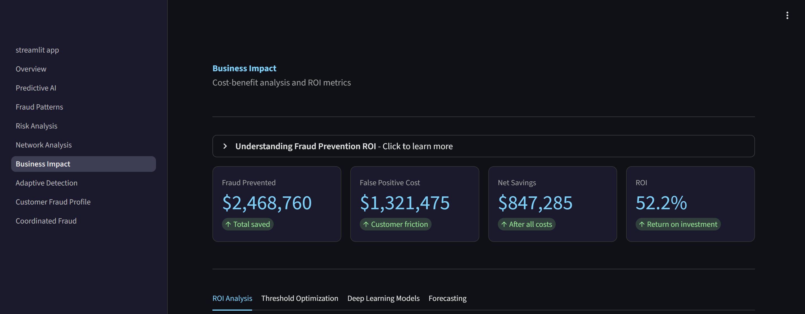
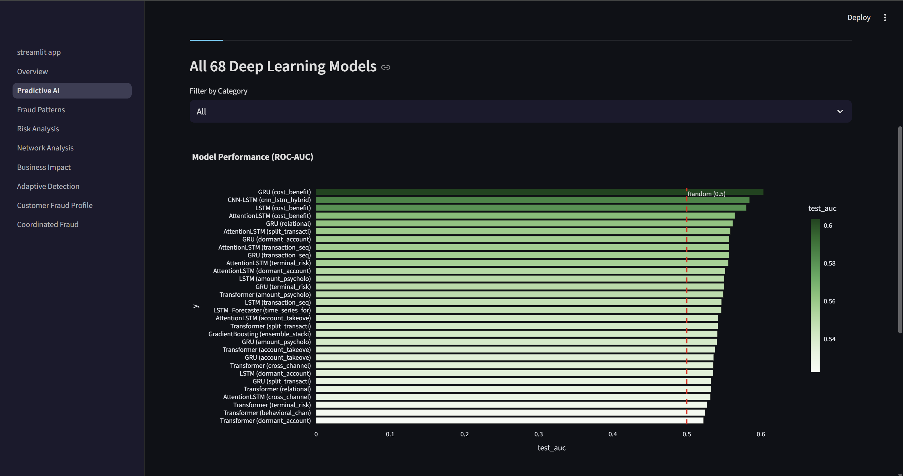
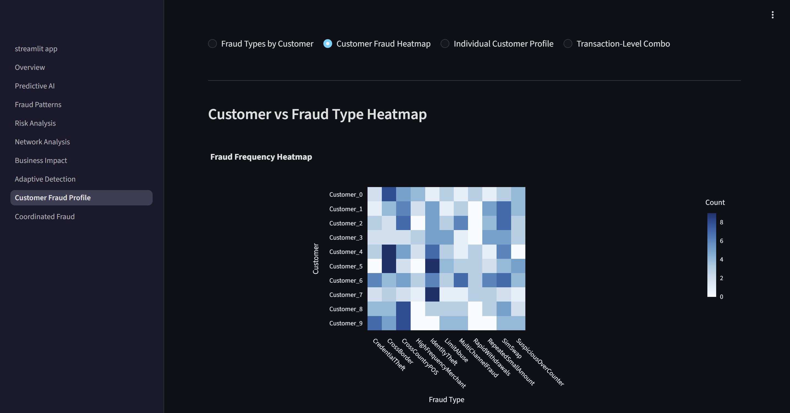
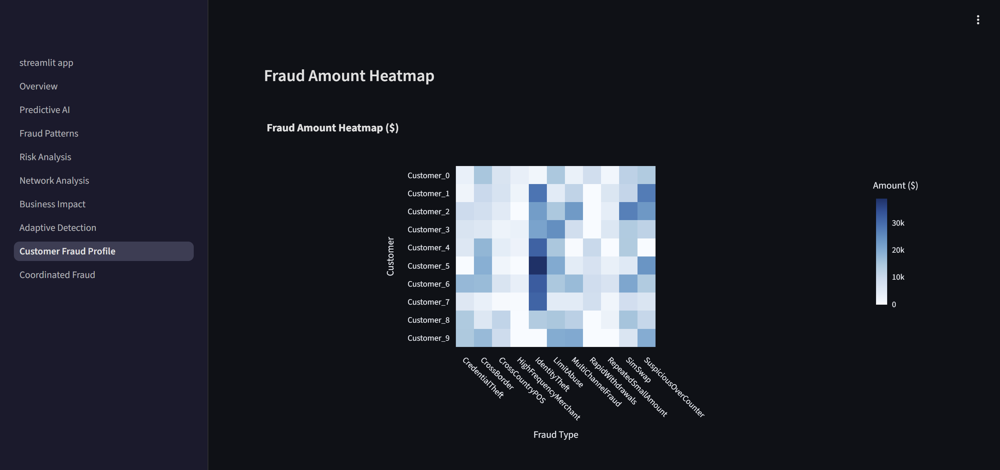
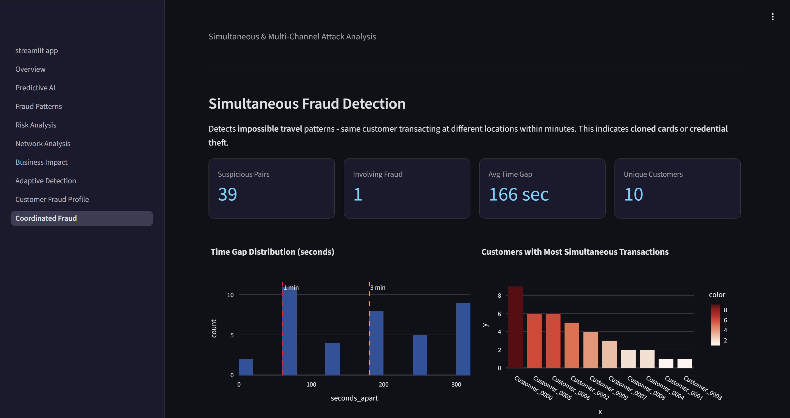
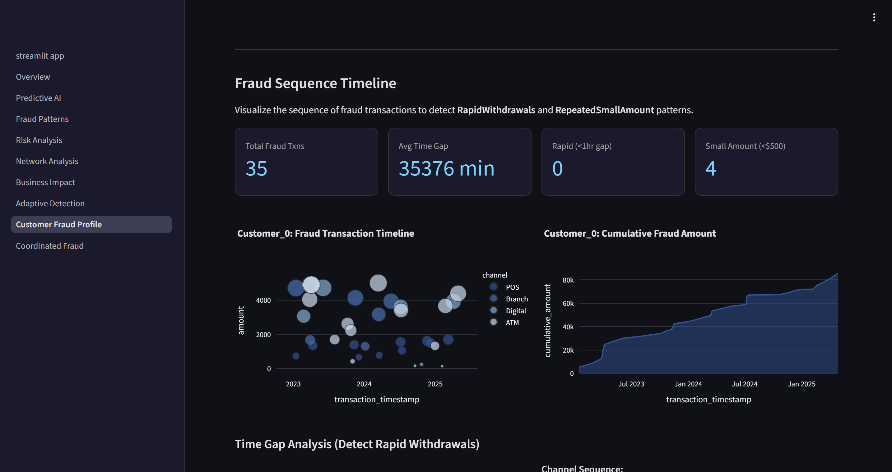
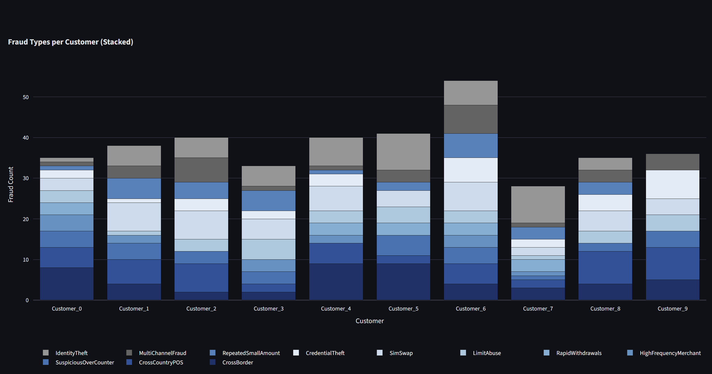
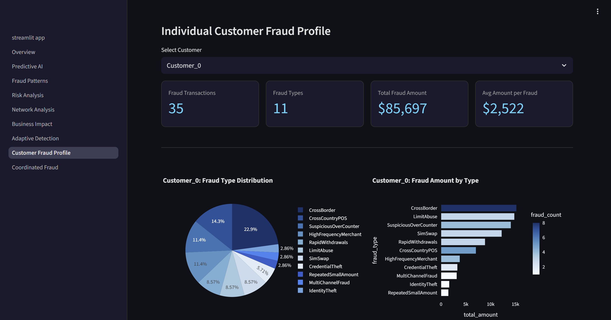
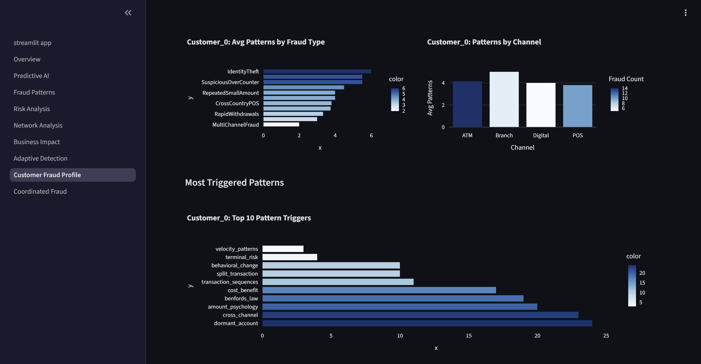
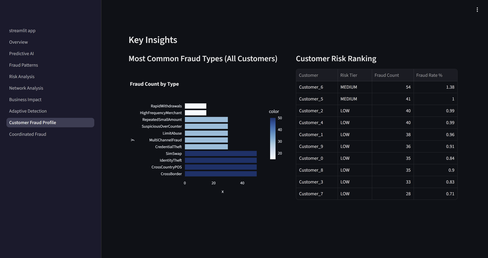
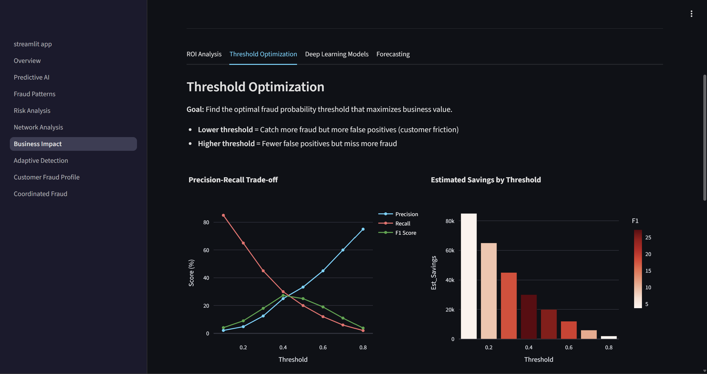
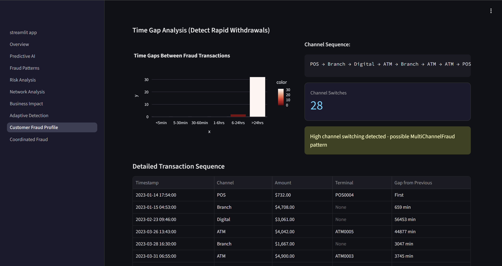
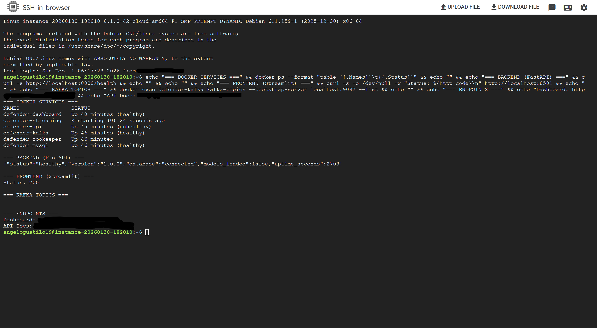
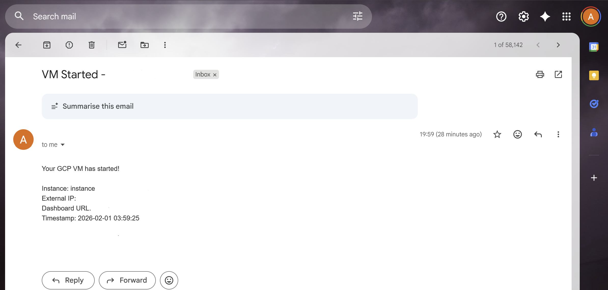
A hybrid AI system built for cloud computing guidance and banking expertise, handling everything from GCP infrastructure questions to financial analysis with precision.
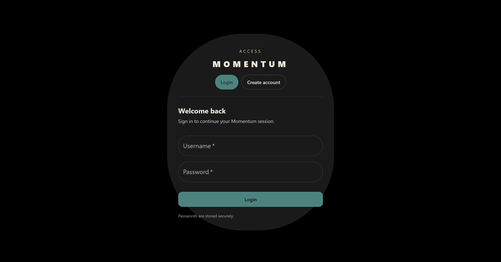
Re-architected from prototype to fully containerized platform handling concurrent multi-user workloads.
Multi-user deployment validated live. Zero crashes. Zero data loss.
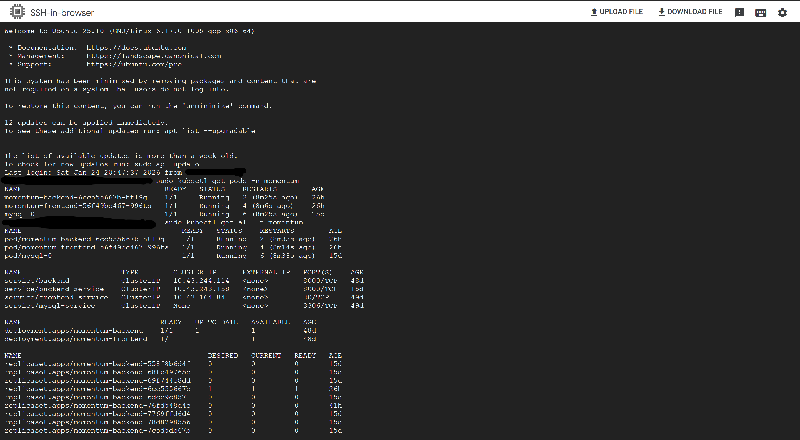
End-to-end ML pipeline combining TensorFlow regression with Apache Kafka for live prediction streaming and monitoring.
sales_predictions topic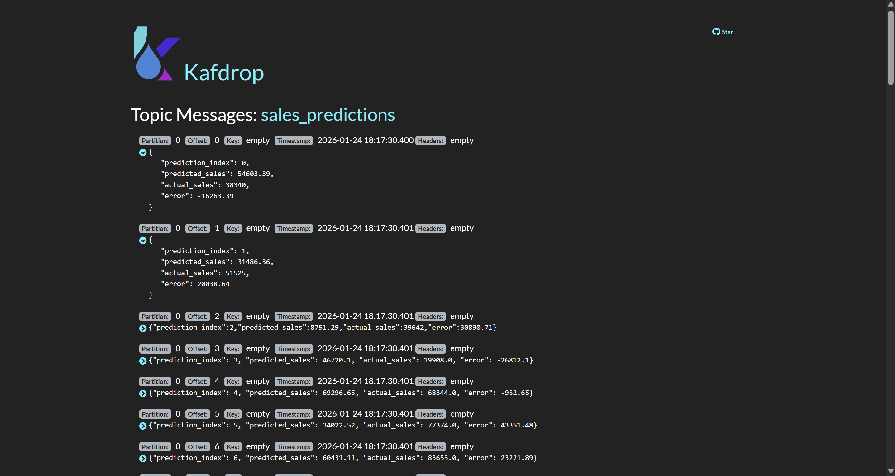
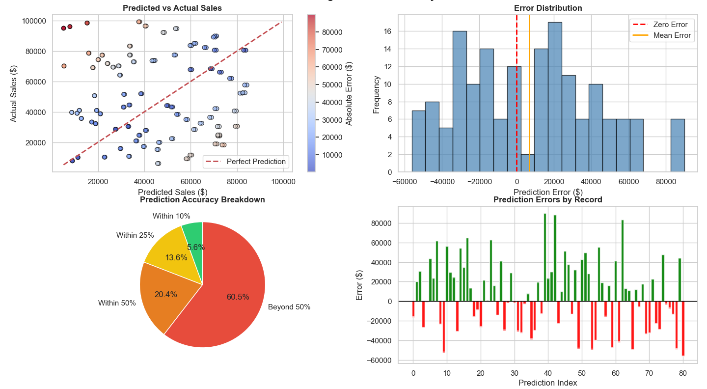
Comprehensive financial analysis combining technical indicators, risk metrics, Monte Carlo simulation, and deep learning across five years of historical data.
Always down to talk cloud architecture, AI systems that actually ship, why Kubernetes is simultaneously the best and worst thing ever — or job opportunities (seriously, my inbox is ready).
"The best code is code that's running somewhere, doing something, for someone."